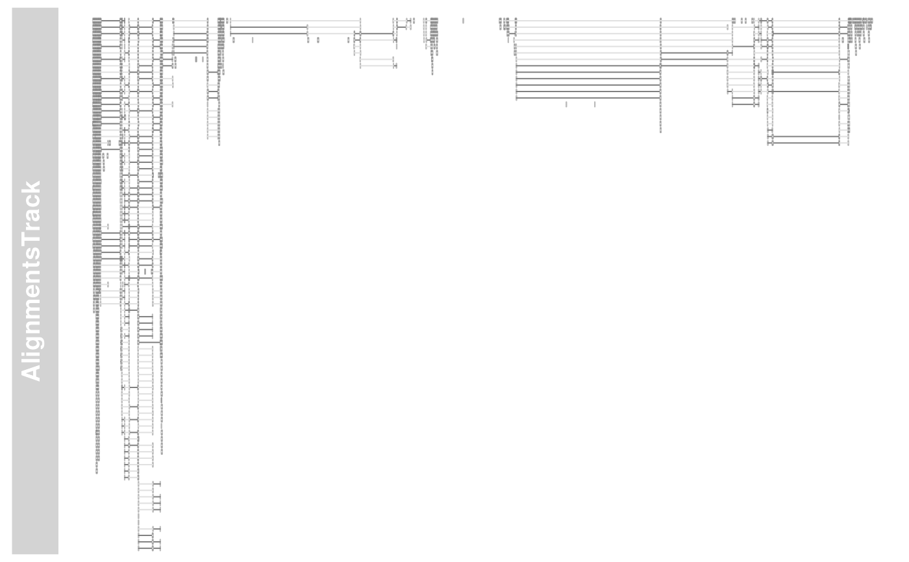
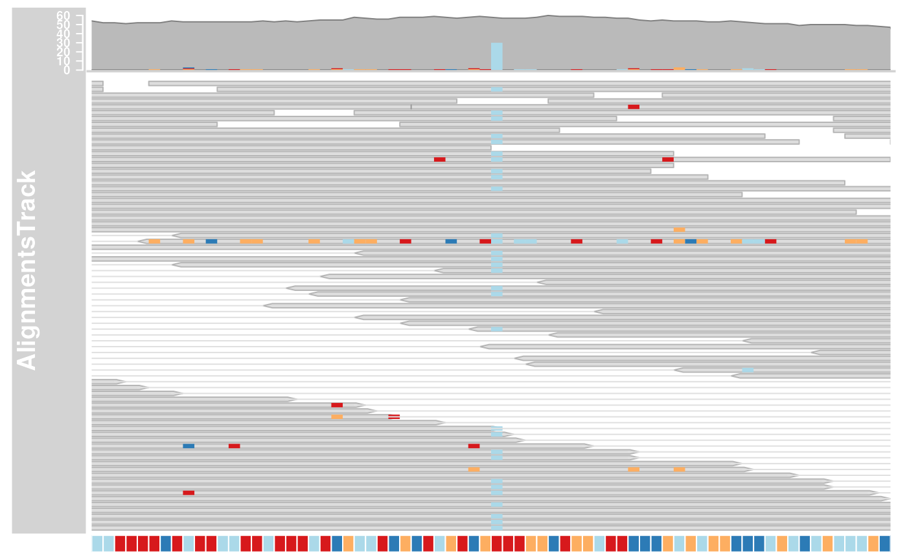

AlignmentsTrack class and methods
AlignmentsTrack-class.RdA class to represent short sequences that have been aligned to a reference genome as they are typically generated in next generation sequencing experiments.
AlignmentsTrack(range=NULL, start=NULL, end=NULL, width=NULL, strand, chromosome, genome, stacking="squish", id, cigar, mapq, flag, isize, groupid, status, md, seqs, name="AlignmentsTrack", isPaired=TRUE, importFunction, referenceSequence, ...)
Arguments
| range |
An optional meta argument to handle the different input types. If
the The different input options for
|
|---|---|
| start, end, width | Integer vectors, giving the start and the end coordinates for the individual track items, or their width. Two of the three need to be specified, and have to be of equal length or of length one, in which case this single value will be recycled. Otherwise, the usual R recycling rules for vectors do not apply here. |
| id | Character vector of read identifiers. Those identifiers have
to be unique, i.e., each range representing a read needs to have a
unique |
| cigar | A character vector of valid CIGAR strings describing details of the alignment. Typically those include alignment gaps or insertions and deletions, but also hard and soft clipped read regions. If missing, a fully mapped read without gaps or indels is assumed. Needs to be of equal length as the provided genomic coordinates, or of length 1. |
| mapq | A numeric vector of read mapping qualities. Needs to be of equal length as the provided genomic coordinates, or of length 1. |
| flag | A named integer vector of length 2, as is produced by Rsamtools::scanBamFlag(), used to filter out undesirable reads. If missing, all mapped reads will be included. |
| isize | A numeric vector of empirical insert sizes. This only applies if the reads are paired. Needs to be of equal length as the provided genomic coordinates, or of length 1. Currently not used. |
| groupid | A factor (or vector than can be coerced into one)
defining the read pairs. Reads with the same |
| status | A factor describing the mapping status of a read. Has to
be one in |
| md | A character vector describing the mapping details. This is effectively and alternative to the CIGAR encoding and it removes the dependency on a reference sequence to figure out read mismatches. Needs to be of equal length as the provided genomic coordinates, or of length 1. Currently not used. |
| seqs |
|
| strand | Character vector, the strand information for the
reads. It may be provided in the form |
| chromosome | The chromosome on which the track's genomic ranges
are defined. A valid UCSC chromosome identifier if
|
| genome | The genome on which the track's ranges are
defined. Usually this is a valid UCSC genome identifier, however
this is not being formally checked at this point. If not provided
here the constructor will try to extract this information from the
provided input, and eventually will fall back to the default value
of |
| stacking | The stacking type for overlapping items of the
track. One in |
| name | Character scalar of the track's name used in the title panel when plotting. |
| isPaired | A logical scalar to determine whether the reads are
paired or not. While this may be used to render paired-end data as
single-end, the oppsite will typically not have any effect because
the appropriate |
| importFunction | A user-defined function to be used to import the
data from a file. This only applies when the |
| referenceSequence | An optional
|
| ... | Additional items which will all be interpreted as further
display parameters. See |
Objects from the Class
Objects can be created using the constructor function AlignmentsTrack.
Value
The return value of the constructor function is a new object of class
AlignmentsTrack or ReferenceAlignmentsTrack.
details
AlignmentTracks usually have two section: the coverage section
on top showing a histogram of the read coverage, and the pile-up
section below with the individual reads. Both can be toggled on or off
using the type display parameter. If reference sequence has
been provided either during object instantiation or with the track
list to the call to plotTracks, sequence mismatch information
will be shown in both sections: as a stacked histogram in the coverage
plot and as colored boxes or characters (depending on available space)
in for the pile-ups.
Slots
stackRanges:Object of class
"GRanges", the ranges of the precomputed mate or gaps stacks that should remain conmnected.sequences:Object of class
"DNAStringSet", the processed read sequences.referenceSequence:Object of class
"SequenceTrack", the reference sequence to which the reads have been aligned to.stacking:Object of class
"character", inherited from classStackedTrackstacks:Object of class
"environment", inherited from classStackedTrackrange:Object of class
GRanges, inherited from classRangeTrackchromosome:Object of class
"character", inherited from classRangeTrackgenome:Object of class
"character", inherited from classRangeTrackdp:Object of class
DisplayPars, inherited from classGdObjectname:Object of class
"character", inherited from classGdObjectimageMap:
Extends
Class "StackedTrack", directly.
Class "RangeTrack", by class "StackedTrack",
distance2.
Class "GdObject", by class "StackedTrack",
distance3.
Methods
In the following code chunks, obj is considered to be an object
of class AlignmentsTrack.
Exported in the name space:
- [
signature(x="AlignmentsTrack"): subset the items in theAlignmentsTrack. This is essentially similar to subsetting of theGRangesobject in therangeslot. For most applications, thesubsetmethod may be more appropriate. Additional Arguments:i: subsetting indices
obj[1:5]
- subset
signature(x="AlignmentsTrack"): subset aAlignmentsTrackby coordinates and sort if necessary. Usage:subset(x, from, to, sort=FALSE, stacks=FALSE)Additional Arguments:from,to: the coordinates range to subset to.sort: sort the object after subsetting. Usually not necessary.stacks: recompute the stacking after subsetting which can be expensive and is not always necessary.
- split
signature(x="AlignmentsTrack"): split anAlignmentsTrackobject by an appropriate factor vector (or another vector that can be coerced into one). The output of this operation is a list ofAlignmentsTrackobjects. Additional Arguments:f: the splitting factor....: all further arguments are ignored.
split(x, f, ...)Examples:
Internal methods:
- drawAxis
signature(GdObject="AlignmentsTrack"): add a y-axis to the title panel of a track. Usage:drawAxis(GdObject, from, to, subset=FALSE, ...)Additional Arguments:from,to: compute axis range from the data within a certain coordinates range only.subset: subset the object prior to calculating the axis ranges. Can be expensive and is not always needed....: all further arguments are ignored.
Gviz:::drawAxis(obj)
- drawGD
signature(gdObject="AlignmentsTrack"): plot the object to a graphics device. The return value of this method is the input object, potentially updated during the plotting operation. Internally, there are two modes in which the method can be called. Either in 'prepare' mode, in which case no plotting is done but the object is preprocessed based on the available space, or in 'plotting' mode, in which case the actual graphical output is created. Since subsetting of the object can be potentially costly, this can be switched off in case subsetting has already been performed before or is not necessary. Usage:drawGD(GdObject, minBase, maxBase, prepare=FALSE, subset=TRUE, ...)Additional Arguments:minBase,maxBase: the coordinate range to plot.prepare: run method in preparation or in production mode.subset: subset the object to the visible region or skip the potentially expensive subsetting operation....: all further arguments are ignored.
Gviz:::drawGD(obj)Gviz:::drawGD(obj, minBase=1, maxBase=100)Gviz:::drawGD(obj, prepare=TRUE, subset=FALSE)
- initialize
signature(.Object="AligendReadTrack"): initialize the object.- show
signature(object="AlignmentsTrack"): show a human-readable summary of the object.
Inherited methods:
- stacking
signature(GdObject="AlignmentsTrack"): return the current stacking type. Usage:stacking(GdObject)Examples:- stacking<-
signature(GdObject="AlignmentsTrack", value="character"): set the object's stacking type to one inc(hide, dense, squish, pack,full). Usage:stacking<-(GdObject, value)Additional Arguments:value: replacement value.
stacking(obj) <- "squish"
- setStacks
signature(GdObject="AlignmentsTrack"): recompute the stacks based on the available space and on the object's track items and stacking settings. Usage:setStacks(GdObject, from, to)Additional Arguments:from,to: compute stacking within a certain coordinates range. This needs to be supplied for the plotting function to know the current genomic coordinates.
Gviz:::setStacks(obj)
- stacks
signature(GdObject="AlignmentsTrack"): return the stack indices for each track item. Usage:stacks(GdObject)Examples:Gviz:::stacks(obj)
- chromosome
signature(GdObject="AlignmentsTrack"): return the chromosome for which the track is defined. Usage:chromosome(GdObject)Examples:- chromosome<-
signature(GdObject="AlignmentsTrack"): replace the value of the track's chromosome. This has to be a valid UCSC chromosome identifier or an integer or character scalar that can be reasonably coerced into one. Usage:chromosome<-(GdObject, value)Additional Arguments:value: replacement value.
chromosome(obj) <- "chr12"
- start, end, width
signature(x="AlignmentsTrack"): the start or end coordinates of the track items, or their width in genomic coordinates. Usage:start(x)end(x)width(x)Examples:width(obj)
- start<-, end<-, width<-
signature(x="AlignmentsTrack"): replace the start or end coordinates of the track items, or their width. Usage:start<-(x, value)end<-(x, value)width<-(x, value)Additional Arguments:value: replacement value.
start(obj) <- 1:10end(obj) <- 20:30width(obj) <- 1
- position
signature(GdObject="AlignmentsTrack"): the arithmetic mean of the track item's coordionates, i.e.,(end(obj)-start(obj))/2. Usage:position(GdObject)Examples:- feature
signature(GdObject="AlignmentsTrack"): return the grouping information for track items. For certain sub-classes, groups may be indicated by different color schemes when plotting. SeegroupingorAnnotationTrackandGeneRegionTrackfor details. Usage:feature(GdObject)Examples:- feature<-
signature(gdObject="AlignmentsTrack", value="character"): set the grouping information for track items. This has to be a factor vector (or another type of vector that can be coerced into one) of the same length as the number of items in theAlignmentsTrack. SeegroupingorAnnotationTrackandGeneRegionTrackfor details. Usage:feature<-(GdObject, value)Additional Arguments:value: replacement value.
feature(obj) <- c("a", "a", "b", "c", "a")
- genome
signature(x="AlignmentsTrack"): return the track's genome. Usage:genome(x)Examples:genome(obj)
- genome<-
signature(x="AlignmentsTrack"): set the track's genome. Usually this has to be a valid UCSC identifier, however this is not formally enforced here. Usage:genome<-(x, value)Additional Arguments:value: replacement value.
genome(obj) <- "mm9"
- length
signature(x="AlignmentsTrack"): return the number of items in the track. Usage:length(x)Examples:- range
signature(x="AlignmentsTrack"): return the genomic coordinates for the track as an object of classIRanges. Usage:range(x)Examples:- ranges
signature(x="AlignmentsTrack"): return the genomic coordinates for the track along with all additional annotation information as an object of classGRanges. Usage:ranges(x)Examples:ranges(obj)
- strand
signature(x="AlignmentsTrack"): return a vector of strand specifiers for all track items, in the form '+' for the Watson strand, '-' for the Crick strand or '*' for either of the two. Usage:strand(x)Examples:strand(obj)
- strand<-
signature(x="AlignmentsTrack"): replace the strand information for the track items. The replacement value needs to be an appropriate scalar or vector of strand values. Usage:strand<-(x, value)Additional Arguments:value: replacement value.
strand(obj) <- "+"
- values
signature(x="AlignmentsTrack"): return all additional annotation information except for the genomic coordinates for the track items as a data.frame. Usage:values(x)Examples:values(obj)
- coerce
signature(from="AlignmentsTrack", to="data.frame"): coerce theGRangesobject in therangeslot into a regular data.frame. Examples:as(obj, "data.frame")
- displayPars
signature(x="AlignmentsTrack", name="character"): list the value of the display parametername. Seesettingsfor details on display parameters and customization. Usage:displayPars(x, name)Examples:- displayPars
signature(x="AlignmentsTrack", name="missing"): list the value of all available display parameters. Seesettingsfor details on display parameters and customization. Examples:- getPar
signature(x="AlignmentsTrack", name="character"): alias for thedisplayParsmethod. Seesettingsfor details on display parameters and customization. Usage:getPar(x, name)Examples:- getPar
signature(x="AlignmentsTrack", name="missing"): alias for thedisplayParsmethod. Seesettingsfor details on display parameters and customization. Examples:- displayPars<-
signature(x="AlignmentsTrack", value="list"): set display parameters using the values of the named list invalue. Seesettingsfor details on display parameters and customization. Usage:displayPars<-(x, value)Examples:displayPars(obj) <- list(col="red", lwd=2)
- setPar
signature(x="AlignmentsTrack", value="character"): set the single display parameternametovalue. Note that display parameters in theAlignmentsTrackclass are pass-by-reference, so no re-assignmnet to the symbolobjis necessary. Seesettingsfor details on display parameters and customization. Usage:setPar(x, name, value)Additional Arguments:name: the name of the display parameter to set.
- setPar
signature(x="AlignmentsTrack", value="list"): set display parameters by the values of the named list invalue. Note that display parameters in theAlignmentsTrackclass are pass-by-reference, so no re-assignmnet to the symbolobjis necessary. Seesettingsfor details on display parameters and customization. Examples:- group
signature(GdObject="AlignmentsTrack"): return grouping information for the individual items in the track. Unless overwritten in one of the sub-classes, this usualy returnsNULL. Usage:group(GdObject)Examples:- names
signature(x="AlignmentsTrack"): return the value of thenameslot. Usage:names(x)Examples:- names<-
signature(x="AlignmentsTrack", value="character"): set the value of thenameslot. Usage:names<-(x, value)Examples:names(obj) <- "foo"
- coords
signature(ImageMap="AlignmentsTrack"): return the coordinates from the internal image map. Usage:coords(ImageMap)Examples:- tags
signature(x="AlignmentsTrack"): return the tags from the internal image map. Usage:tags(x)Examples:
Display Parameters
The following display parameters are set for objects of class
AlignmentsTrack upon instantiation, unless one or more of them
have already been set by one of the optional sub-class initializers,
which always get precedence over these global defaults. See
settings for details on setting graphical parameters
for tracks.
alpha.mismatch=1: Numeric scalar between 0 and 1. The transparency of the mismatch base information.alpha.reads=0.5: Numeric scalar between 0 and 1. The transparency of the individual read icons. Can be used to indicate overlapping regions in read pairs. Only on supported devices.cex=0.7: Numeric Scalar. The global character expansion factor.cex.mismatch=NULL: Numeric Scalar. The character expansion factor for the mismatch base letters.col="#808080": Integer or character scalar. The default color of all line elements.col.coverage=NULL: Integer or character scalar. The line color for the coverage profile.col.deletion="#000000": Integer or character scalar. The color of the line that is bridging the deleted regions in alignments.col.gap="#808080"(Aliases: col.gap): Integer or character scalar. The color of the line that is bridging the gap regions in gapped alignments.col.insertion="#984EA3": Integer or character scalar. The color of the line that highlighting insertions in alignments.col.mates="#E0E0E0"(Aliases: col.mate): Integer or character scalar. The color of the line that is connecting two paired reads.col.mismatch="#808080": Integer or character scalar. The box color around mismatch bases.col.reads=NULL: Integer or character scalar. The box color around reads.col.sashimi=NULL: Integer or character scalar. The line color for sashimi plots.collapse=FALSE: Logical scalar. Do not perform any collapsing of overlapping elements. Currently not supported.coverageHeight=0.1: Numeric scalar. The height of the coverage region of the track. Can either be a value between 0 and 1 in which case it is taken as a relative height, or a positive value greater 1 in which case it is interpreted as pixels.fill="#BABABA": Integer or character scalar. The default fill color of all plot elements.fill.coverage=NULL: Integer or character scalar. The fill color for the coverage profile.fill.reads=NULL: Integer or character scalar. The fill color for the read icons.fontface.mismatch=2: Integer scalar. The font face for mismatch bases.lty=1: Integer or character scalar. The default type of all line elements.lty.coverage=NULL: Integer or character scalar. The line type of the coverage profile.lty.deletion=NULL: Integer or character scalar. The type of the line that is bridging the deleted regions in alignments.lty.gap=NULL(Aliases: lty.gap): Integer or character scalar. The type of the line that is bridging the gap regions in gapped alignments.lty.insertion=NULL: Integer or character scalar. The type of the line that highlighting insertions in alignments.lty.mates=NULL(Aliases: lty.mate): Integer or character scalar. The type of the line that is connecting two paired reads.lty.mismatch=NULL: Integer or character scalar. The box line type around mismatch bases.lty.reads=NULL: Integer or character scalar. The box line type around mismatch reads.lwd=1: Integer scalar. The default width of all line elements.lwd.coverage=NULL: Integer or character scalar. The line width of the coverage profile.lwd.deletion=NULL: Integer scalar. The width of the line that is bridging the deleted regions in alignments.lwd.gap=NULL(Aliases: lwd.gap): Integer scalar. The width of the line that is bridging the gap regions in gapped alignments.lwd.insertion=NULL: Integer scalar. The width of the line that highlighting insertions in alignments.lwd.mates=NULL(Aliases: lwd.mate): Integer scalar. The width of the line that is connecting two paired reads.lwd.mismatch=NULL: Integer scalar. The box line width around mismatch bases.lwd.reads=NULL: Integer scalar. The box line width around reads.lwd.sashimiMax=10: Integer scalar. The maximal width of the line in sashimi plots.max.height=10: Integer scalar. The maximum height of an individual read in pixels. Can be used in combination withmin.heightto control the read and stacking appearance.min.height=5: Integer scalar. The minimum height of an individual read in pixels. Can be used in combination withmax.heightto control the read and stacking appearance.minCoverageHeight=50: Integer scalar. The minimum height of the coverage section. Uselful in combination with a relative setting ofcoverageHeight.minSashimiHeight=50: Integer scalar. The minimum height of the sashimi section. Uselful in combination with a relative setting ofsashimiHeight.noLetters=FALSE: Logical scalar. Always plot colored boxes for mismatch bases regardles of the available space.sashimiFilter=NULL: GRanges object. Only junctions which overlap equally withsashimiFilterGRanges are shown. DefaultNULL, no filtering.sashimiFilterTolerance=0: Integer scalar. Only used in combination withsashimiFilter. It allows to include junctions whose starts/ends are within specified distance fromsashimiFilterGRanges. This is useful for cases where the aligner did not place the junction reads precisely. Default0L, no tolerance.sashimiHeight=0.1: Integer scalar. The height of the sashimi part of the track. Can either be a value between 0 and 1 in which case it is taken as a relative height, or a positive value greater 1 in which case it is interpreted as pixels.sashimiScore=1: Integer scalar. The minimum number of reads supporting the junction.sashimiStrand="*": Integer scalar. Only reads which have the specified strand are considered to count the junctions.sashimiTransformation=NULL: Function. Applied to the junction score vector prior to plotting. The function should accept exactly one input argument and its return value needs to be a numeric vector of identical length as the input data.showIndels=FALSE: Logical scalar. Consider insertions and deletions in coverage and pile-up. Default isFALSE. If set toTRUEthe deletions defined in CIGAR string are not considered in coverage plot. The deletions are displayed as bridging lines in pile-up track. Insertions are shown as vertical bars.showMismatches=TRUE: Logical scalar. Add mismatch information, either as individual base letters or using color coded bars. This implies that the reference sequence has been provided, either to the class constructor or as part of the track list.size=NULL: Numeric scalar. The size of the track. Defaults to automatic sizing.transformation=NULL: Function. Applied to the coverage vector prior to plotting. The function should accept exactly one input argument and its return value needs to be a numeric Rle of identical length as the input data.type=c("coverage", "pileup"): Character vactor. The type of information to plot. Forcoveragea coverage plot, potentially augmented by base mismatch information, forsashimia sashimi plot, showing the juctions, and forpileupthe pileups of the individual reads. These three can be combined.
Additional display parameters are being inherited from the respective
parent classes. Note that not all of them may have an effect on the
plotting of AlignmentsTrack objects.
reverseStacking=FALSE: Logical flag. Reverse the y-ordering of stacked items. I.e., features that are plotted on the bottom-most stacks will be moved to the top-most stack and vice versa.stackHeight=0.75: Numeric between 0 and 1. Controls the vertical size and spacing between stacked elements. The number defines the proportion of the total available space for the stack that is used to draw the glyphs. E.g., a value of 0.5 means that half of the available vertical drawing space (for each stacking line) is used for the glyphs, and thus one quarter of the available space each is used for spacing above and below the glyph. Defaults to 0.75.
alpha=1: Numeric scalar. The transparency for all track items.alpha.title=NULL: Numeric scalar. The transparency for the title panel.background.legend="transparent": Integer or character scalar. The background color for the legend.background.panel="transparent": Integer or character scalar. The background color of the content panel.background.title="lightgray": Integer or character scalar. The background color for the title panel.cex.axis=NULL: Numeric scalar. The expansion factor for the axis annotation. Defaults toNULL, in which case it is automatically determined based on the available space.cex.title=NULL: Numeric scalar. The expansion factor for the title panel. This effects the fontsize of both the title and the axis, if any. Defaults toNULL, which means that the text size is automatically adjusted to the available space.col.axis="white": Integer or character scalar. The font and line color for the y axis, if any.col.border.title="white": Integer or character scalar. The border color for the title panels.col.frame="lightgray": Integer or character scalar. The line color used for the panel frame, ifframe==TRUEcol.grid="#808080": Integer or character scalar. Default line color for grid lines, both whentype=="g"inDataTracks and when display parametergrid==TRUE.col.line=NULL: Integer or character scalar. Default colors for plot lines. Usually the same as the globalcolparameter.col.symbol=NULL: Integer or character scalar. Default colors for plot symbols. Usually the same as the globalcolparameter.col.title="white"(Aliases: fontcolor.title): Integer or character scalar. The border color for the title panelsfontcolor="black": Integer or character scalar. The font color for all text, unless a more specific definition exists.fontface=1: Integer or character scalar. The font face for all text, unless a more specific definition exists.fontface.title=2: Integer or character scalar. The font face for the title panels.fontfamily="sans": Integer or character scalar. The font family for all text, unless a more specific definition exists.fontfamily.title="sans": Integer or character scalar. The font family for the title panels.fontsize=12: Numeric scalar. The font size for all text, unless a more specific definition exists.frame=FALSE: Boolean. Draw a frame around the track when plotting.grid=FALSE: Boolean, switching on/off the plotting of a grid.h=-1: Integer scalar. Parameter controlling the number of horizontal grid lines, seepanel.gridfor details.lineheight=1: Numeric scalar. The font line height for all text, unless a more specific definition exists.lty.grid="solid": Integer or character scalar. Default line type for grid lines, both whentype=="g"inDataTracks and when display parametergrid==TRUE.lwd.border.title=1: Integer scalar. The border width for the title panels.lwd.grid=1: Numeric scalar. Default line width for grid lines, both whentype=="g"inDataTracks and when display parametergrid==TRUE.lwd.title=1: Integer scalar. The border width for the title panelsmin.distance=1: Numeric scalar. The minimum pixel distance before collapsing range items, only ifcollapse==TRUE. Seecollapsingfor details.min.width=1: Numeric scalar. The minimum range width in pixels to display. All ranges are expanded to this size in order to avoid rendering issues. Seecollapsingfor details.reverseStrand=FALSE: Logical scalar. Set up the plotting coordinates in 3' -> 5' direction ifTRUE. This will effectively mirror the plot on the vertical axis.rotation=0: The rotation angle for all text unless a more specific definiton exists.rotation.title=90(Aliases: rotation.title): The rotation angle for the text in the title panel. Even though this can be adjusted, the automatic resizing of the title panel will currently not work, so use at own risk.showAxis=TRUE: Boolean controlling whether to plot a y axis (only applies to track types where axes are implemented).showTitle=TRUE: Boolean controlling whether to plot a title panel. Although this can be set individually for each track, in multi-track plots as created byplotTracksthere will still be an empty placeholder in case any of the other tracks include a title. The same holds true for axes. Note that the the title panel background color could be set to transparent in order to completely hide it.v=-1: Integer scalar. Parameter controlling the number of vertical grid lines, seepanel.gridfor details.
Author
Florian Hahne
See also
GRanges
IRanges
panel.grid
Examples
## Creating objects afrom <- 2960000 ato <- 3160000 alTrack <- AlignmentsTrack(system.file(package="Gviz", "extdata", "gapped.bam"), isPaired=TRUE) plotTracks(alTrack, from=afrom, to=ato, chromosome="chr12")## Omit the coverage or the pile-ups part plotTracks(alTrack, from=afrom, to=ato, chromosome="chr12", type="coverage")## Including sequence information with the constructor if(require(BSgenome.Hsapiens.UCSC.hg19)){ strack <- SequenceTrack(Hsapiens, chromosome="chr21") afrom <- 44945200 ato <- 44947200 alTrack <- AlignmentsTrack(system.file(package="Gviz", "extdata", "snps.bam"), isPaired=TRUE, referenceSequence=strack) plotTracks(alTrack, chromosome="chr21", from=afrom, to=ato) ## Including sequence information in the track list alTrack <- AlignmentsTrack(system.file(package="Gviz", "extdata", "snps.bam"), isPaired=TRUE) plotTracks(c(alTrack, strack), chromosome="chr21", from=44946590, to=44946660) }#>#>#>#>#> #>#> #> #>#> #> #>#>